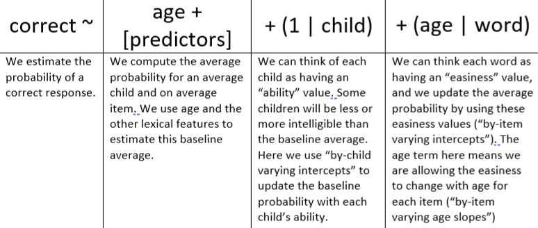
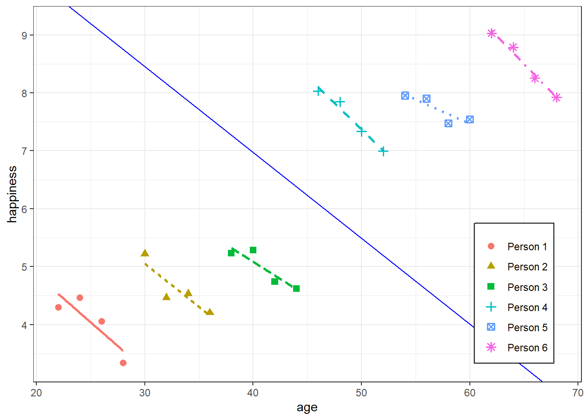
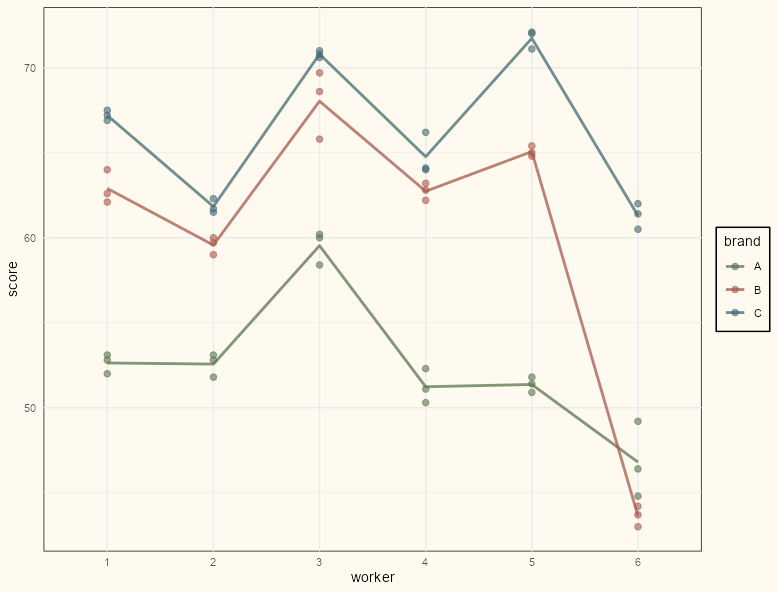

General
Misc
- Mixed Effects Model = Random Effects model = Multilevel model = Hierarchical model
- Also see
- Resources
- Bayesian Generalized Linear Mixed Effects Models for Deception Detection Analyses
- Paper that’s an in-depth tutorial. Uses {brms}, {emmeans}, {parameters}
- Mixed Models in R by Michael Clark
- Bayesian Generalized Linear Mixed Effects Models for Deception Detection Analyses
- Packages
- {lme4} - linear and generalized linear mixed-effects models; implemented using the ‘Eigen’ C++ library for numerical linear algebra and ‘RcppEigen’ “glue”.
- Using {lmerTest} will produce a summary of lme4 models with pvals and dofs for coefficients
- {multilevelmod} - tidymodels wrapper for many mixed model packages.
- {tidymodels} workflows (optional outputs: lmer, glmer, stan_glmer objects)
- {plm} - Linear models for panel data in an econometrics context; including within/fixed effects, random effects, between, first-difference, nested random effects. Also includes robust covariance estimators (e.g Newey-West), and model tests.
- Formula syntax isn’t typical R format. The econometric estimators are unfamilar and will need extra research to figure out what they are, do, and how to use them appropriately.
- {glmmTMB} - for fitting generalized linear mixed models (GLMMs) and extensions
- Wide range of statistical distributions (Gaussian, Poisson, binomial, negative binomial, Beta …) and zero-inflation.
- Fixed and random effects models can be specified for the conditional and zero-inflated components of the model, as well as fixed effects for the dispersion parameter.
- {spaMM} - Inference based on models with or without spatially-correlated random effects, multivariate responses, or non-Gaussian random effects (e.g., Beta).
- {merTools} - Allows construction of prediction intervals efficiently from large scale linear and generalized linear mixed-effects models
- Also has tools for analyzing multiply imputed mixed efffects models
- Comes with a shiny app to explore the model
- {mixedup} - Extracts components from mixed effects models. Supports lme4, glmmTMB, nlme, mgcv, rstanarm, brms models
- Pulling components from some of these packages (e.g. glmmTMB) such as variances, autocorrelation, etc. can be very gnarly. These helper function substantially reduce the stress of finding and extracting them.
- The package isn’t on CRAN and last I checked hasn’t been updated since 2022, but the packages that it works with are mature. So, their code isn’t likely to change much. Therefore, it should remain useful.
- {lmeresampler} - Bootstrap methods to obtain consistent estimators of the bias and standard errors for inference.
- Particularly useful for models fit with relatively small data sets, where bootstrapping may yield more robust parameter estimates.
- Supports {lme4} and {nlme}
- Bootstrap Methods: parametric, residual, cases, CGR (semi-parametric), or random effects block (REB)
- {mmrm} - Mixed Models for Repeated Measures
- Fills requirement for adjusted degrees of freedom for t-tests and F-tests since clusters are usually unbalanced.
- Uses Satterthwaite or Kenward-Roger dof adjustment methods and Robust Sandwich Estimator for covariance
- {lmertest} slow and doesn’t converge for large data
- {nlme} doesn’t have Satterthwaite available
- Fast convergence by utilizing C++ through the TMB interface
- Supported by the pharmaceutical industry (5 companies) and matches SAS output within 10-3
- Flexible covariance specification:
- Structures: unstructured, Toeplitz, AR1, compound symmetry, ante-dependence, and spatial exponential.
- Groups: shared covariance structure for all subjects or group-specific covariance estimates.
- Variances: homogeneous or heterogeneous across time points.
- Support for {emmeans} and {tidymodels}
- Fills requirement for adjusted degrees of freedom for t-tests and F-tests since clusters are usually unbalanced.
- {WeMix} - Functions for mixed-effects models that include weights at every level. Both linear and logit models are supported. Models may have up to three levels.
- When you have variable cluster sizes, inverse cluster size weights can be specified to ensure that all clusters contribute equally regardless of cluster size which mitigates a loss of power.
- {lme4} - linear and generalized linear mixed-effects models; implemented using the ‘Eigen’ C++ library for numerical linear algebra and ‘RcppEigen’ “glue”.
- Advantages of a mixed model (\(y \sim x + (x \;|\; g)\)) vs a linear model with an interaction (\(y \sim x \ast g\))
- From T.J. Mahr tweet
- Conceptual: Assumes participant means are drawn from the same latent population
- Computational: partial pooling vs smoothing
- A regression corresponds to an implicit model of equal variation between and within the grouping variable. (Gelman)
- Both will have very similar parameter estimates when the data is balanced with few to no outliers
- Linear least squares regression can overstate precision, producing t-statistics for each fixed effect that tend to be larger than they should be; the number of significant results in LLSR are then too great and not reflective of the true structure of the data
- Standard errors are underestimated in the interaction model.
- Doesn’t account for dependence in the repeated measure for each subject
- For unbalanced data w/some group categories having few data points or with outliers, the mixed effects model regularizes/shrinks/smooths the estimates to the overall group (i.e. population) mean
- Example of model formula interpretation

- Mixed Effects and Longitudinal Data
- Harrell (article)
- Says that Mixed Models models can capture within-subject correlation of repeated measures over very short time intervals but not over extended time intervals where autocorrelation comes into play
- Example of a short interval is a series of tests on a subject over minutes when the subject does not fatigue
- Example of a long interval is a typical longitudinal clinical trial where patient responses are assessed weekly or monthly
- He recommends a Markov model for longitudinal RCT data (see bkmks)
- Says that Mixed Models models can capture within-subject correlation of repeated measures over very short time intervals but not over extended time intervals where autocorrelation comes into play
- Harrell (article)
- For a varying intercepts model where there’s an intercept per patient: “To have random effects requires having multiple post-randomization observations per patient—either, for example, a 6-period 2-treatment randomized crossover study or a longitudinal study with lots of longitudinal assessments per patient.”
- Bartlett
- Mixed model repeated measures (MMRM) in Stata, SAS and R
- Tutorial; uses {nlme::gls}
- Mixed model repeated measures (MMRM) in Stata, SAS and R
- Harrell (article)
- As long as you are fitting a multilevel model as the final model, you don’t have to worry about multiple comparisons (i.e. explore all the subsets of models you want prior to fitting the multilevel model)
- “It is good to analyze data in different ways! The mistake is to choose just one. Rather than reporting the best result and then adjusting the analysis for multiple comparisons, we recommend performing all of some set of comparisons of interest and then using multilevel modeling to learn from the ensemble” Gelman
- “Multilevel models perform partial pooling (shifting estimates toward each other), whereas classical procedures typically keep the centers of intervals stationary, adjusting for multiple comparisons by making the intervals wider (or, equivalently, adjusting the p-values corresponding to intervals of fixed width). Multilevel estimates make comparisons more conservative, in the sense that intervals for comparisons are more likely to include zero; as a result, those comparisons that are made with confidence are more likely to be valid.” From Why we (usually) don’t have to worry about multiple comparisons (Gelman, Hill, Yajima 2008)
{kind=link}
Considerations
- Motivation for using a Random Effects model
- You think the little subgroups are part of some bigger group with a common mean effect
- e.g. Multiple observations of a single person, or multiple people in a school, or multiple schools in a district, or multiple varieties of a single kind of fruit, or multiple kinds of vegetable from the same harvest, or multiple harvests of the same kind of vegetable, etc.
- These subgroup means significantly deviate from the big group mean.
i.e. We suspect there to be between-subject variance and not just within-subject variance (linear model).
The Between-Subject Variance isn’t clearly depicted IMO. The Between-Subject Variance captures the differences between individual subjects or groups in their average responses or outcomes. It can be understood better by looking at the sample formula where the grand mean is subtracted from each subject’s mean.
\[ \text{Between-Subject Variance} = \frac{\sum_{i=1}^{k} n_i (\bar{X}_i - \bar{X})^2}{k-1} \]
- \(k\) is the number of groups or levels of the independent variable.
- Denominator is a dof term.
- \(n_i\) is the number of observations in the ith group.
- \(\bar X_i\) is the mean of the observations in the ith group.
- \(\bar X\) is the grand mean.
- \(k\) is the number of groups or levels of the independent variable.
- These deviations follow a distribution, typically Gaussian.
- That’s where the “random” in random effects comes in: we’re assuming the deviations of subgroups follow the distribution of a random (Gaussian) variable
- The variation between subgroups is assumed to have a normal distribution with a 0 mean and constant variance (variance estimated by the model).
- GEEs are a semi-parametric option for panel data (See Regression, Other >> Generalized Estimating Equations (GEE))
- That’s where the “random” in random effects comes in: we’re assuming the deviations of subgroups follow the distribution of a random (Gaussian) variable
- You think the little subgroups are part of some bigger group with a common mean effect
- Fixed Effects or Random Effects?
- If there’s likely correlation between unobserved group/cases variables (e.g. individual talent) and treatment variable (i.e. E(α|x) != 0) AND there’s substantial variance between group units, then FE is a better choice (See Econometrics, Fixed Effects >> One-Way Fixed Effects >> Assumptions)
- If cases units change little, or not at all, across time, a fixed effects model may not work very well or even at all (SEs for a FE model will be large)
- The FE model is for analyzing within-units variance
- Do we wish to estimate the effects of variables whose values do not change across time, or do we merely wish to control for them?
- FE: these effects aren’t estimated but adjusted for by explicitly including a separate intercept term for each individual (αi) in the regression equation
- RE: estimates these effects (might be biased if RE assumptions violated)
- The RE model is for analyzing between-units variance
- The amount of within-unit variation relative to between-unit variation has important implications for these two approaches
- Article with simulated data showed that within variation around sd < 0.5 didn’t detect the effect of explanatory variable but ymmv (depends on # of units, observations per unit, N)
- Durbin–Wu–Hausman test ({plm::phtest})
- If H0 is not rejected, then both FE and RE are consistent but only RE is efficient. \(\rightarrow\) use RE but if you have a lot of data, then FE is also fine.
- If H0 is rejected, then only FE is consistent \(\rightarrow\) use FE
- ICC > 0.1 is generally accepted as the minimal threshold for justifying the use of Mixed Effects Model (See Diagnostics, Mixed Effects >> Metrics >> ICC)
- Pooling
- Complete pooling - Each unit is assumed to have the same effect
- Example: County is the grouping variable and radon level is the outcome
- All counties are alike.
- i.e. all characteristics of counties that affect radon levels in houses have the statistically same effect across counties. Therefore, the variable has no information.
- Run a single regression to estimate the average radon level in the whole state.
lm(radon_level ~ predictors)- Note that “county” is NOT a predictor in this model
- All counties are alike.
- Example: County is the grouping variable and radon level is the outcome
- No pooling - All units are assumed to have independent effects
- Example: County is the grouping variable (although not a predictor in this case) and radon level is the outcome
- All counties are different from each other.
- i.e. there are no common characteristics of counties that affect radon levels in houses. Any characteristic a county has that affects radon levels is unique to that county.
- Run a regression for each county to estimate the average radon level for each county.
lm(radon_level ~ 0 + county + predictors- Using the “0 +” formula removes the common intercept which means each county will get it’s own intercept
- All counties are different from each other.
- Example: County is the grouping variable (although not a predictor in this case) and radon level is the outcome
- Partial pooling - Each unit is assumed to have a different effect, but the data for all of the observed units informs the estimates for each unit
- Example: County is the grouping variable (random effect) and radon level is the outcome
- All counties are similar each other.
- i.e. all charcteristics of counties that affect radon levels in house have statistically varying effects sizes depending on the particular county
- Run a multi-level regression to share information across counties.
lmer(radon_level ~ predictors + (1 + predictor | county))
- All counties are similar each other.
- This can be a nice compromise between estimating an effect by completely pooling all groups, which masks group-level variation, and estimating an effect for all groups completely separately, which could give poor estimates for low-sample groups.
- If you have few data points in a group, the group’s effect estimate will be based partially on the more abundant data from other groups. (2 min video)
- This is called Regularization. Subjects with fewer data points will have their estimates pulled to the grand mean more than subjects with more data points.
- The grand mean will be the (Intercept) value in the Fixed Effects section of the
summary.
- The grand mean will be the (Intercept) value in the Fixed Effects section of the
- You can visualize the amount of regularization by comparing the conditional modes (see Model Equation >> Conditional Modes) to the group means in the observed data.
-
Code
rt_lme_mod <- lmer(rt ~ 1 + (1|subid), dat) comparison_dat <- dat |> summarize(avg_rt = mean(rt), .by = subid) |> mutate(cond_modes = coef(rt_lme_mod)$subid[[1]]) |> tidyr::pivot_longer( cols = c(avg_rt, cond_modes), names_to = "type", values_to = "estimate" ) ggplot(comparison_dat, aes(x = subid, y = estimate, color = type)) + geom_point() + scale_color_manual(values = c("#195198", "#BD9865")) + geom_hline(yintercept = lme4::fixef(rt_lme_mod)[[1]]) + # overall intercept/grand mean scale_x_continuous(breaks = seq(0 , 10, 1), minor_breaks=seq(0, 10,1)) + theme_notebook()- The conditional modes (gold) are all closer to the horizontal line which represents the grand mean.
- There are few data points for each of the first five subjects, so in general, they are pulled more than the last five subjects which have many more data points.
- i.e. The differences between the observed means (blue) and conditional modes (gold) are greater in the first five subjects than the last five subjects
- Points already close to the grand mean can’t be pulled as much since they’re already very close to the grand mean (e.g. subject 1)
-
- This is called Regularization. Subjects with fewer data points will have their estimates pulled to the grand mean more than subjects with more data points.
- Partial pooling is typically accomplished through hierarchical models. Hierarchical models directly model the population of units. From a population model perspective, no pooling corresponds to infinite population variance, whereas complete pooling corresponds to zero population variance.
- Example: County is the grouping variable (random effect) and radon level is the outcome
- Complete pooling - Each unit is assumed to have the same effect
- Variable Assignment
- Questions (article has examples)
- Can the groups we see be considered the full population of possible groups we could see, or are they more like a random sample of a larger set of groups?
- Full Population: Fixed
- Random Sample: Random
- Do we want to estimate a coefficient for this grouping, or do we just want to account for the anticipated structure that the groups may impose on our observations?
- Y: Fixed
- N: Random
- Can the groups we see be considered the full population of possible groups we could see, or are they more like a random sample of a larger set of groups?
- Fixed Effects provide estimates of mean-differences or slopes.
- “Fixed” because they are effects that are constant for each subject/unit
- Should include within-subject variables (e.g. random effect slope variables) and between-subject variables (e.g. gender)
- Level One: variables measured at the most frequently occurring observational unit
- i.e. Vary for each repeated measure of a subject and vary between subjects
- In the dataset, these variables that (for the most part) have different values for each row
- Time-dependent if you have longitudinal data
- For a RE model, these are usually the adjustment variables
- e.g. Conditioning on a confounder
- i.e. Vary for each repeated measure of a subject and vary between subjects
- Level Two: variables measured at the observational unit level
- i.e. Constant for each repeated measure of a subject but vary between each subject
- For a RE model, these are usually the treatment variables or variables of interest
- They should contain the information about the between-subject variation
- If a factor variable, it has levels which would not change in replications of the study
- Random Effects estimate of variation between and within subgroups
- Intercepts variables (e.g. v1 in Specification and Notation) should be grouping variables (i.e. discrete or categorical) (e.g school, department)
- Slopes variables (e.g. v2 in Specification and Notation) should be continuous within-subject variables (e.g time)
- These variables should also be included in the fixed effects
- Quantifies how much of the overall variation can be attributed to that particular variable.
- Example: the variation in beetle DAMAGE was attributable to the FARM at which the damage took place, so you’d cluster by FARM (
1|FARM)
- Example: the variation in beetle DAMAGE was attributable to the FARM at which the damage took place, so you’d cluster by FARM (
- If you want slopes to vary according to a variable, the variation of slopes between-units will be a random effect
- Usually a level 2 fixed effect variable
- If you want intercepts to vary according to a variable, the variation of intercepts between-units will be a random effect
- This will the unit/subject variable (e.g student id, store id) that has the repeated observations
- Typically categorical variables that we are not interested in measuring their effects on the outcome variable, but we do want to adjust for. This variation might capture effects of latent variables.
- This factor variable has levels which can be thought of as a sample from a larger population of factor levels (e.g. hockey players)
- Example: 2 hockey players both averaged around 20 minutes per game last year (fixed variable). Predictions of the amount of points scored by just accounting for this fixed variable would produce similar results. But using PLAYER as a random variable will capture the impact of persistent characteristics that might not be observable elsewhere in the explanatory data. PLAYER can be thought of as a proxy for “offensive talent” in a way.
- If the values of the variable were chosen at random, then you should cluster by that variable (i.e. choose as the random variable)
- Example: If you can rerun the study using different specific farms (i.e .different values of the FARM factor, see above) and still be able to draw the same conclusions, then FARM should be a random effect.
- However, if you had wanted to compare or control for these particular farms, then Farm would be “fixed.”
- Say that there is nothing about comparing these specific fields that is of interest to the researcher. Rather, the researcher wants to generalize the results of this experiment to all fields. Then, FIELD would be “random.”
- Example: If you can rerun the study using different specific farms (i.e .different values of the FARM factor, see above) and still be able to draw the same conclusions, then FARM should be a random effect.
- If the random effects are correlated with variables of interest (fixed effects), leaving them out could lead to biased fixed effects. Including them can help more reliably isolate the influence of the fixed effects of interest and more accurately model a clustered system.
- To see individual random effects:
lme4::ranef(lme_mod)orlme4::ranef(tidy_mod$fit)
- Questions (article has examples)
{kind=link}
{kind=link}
{kind=link}
Model Equation
Misc
- Notes from Video Playlist: Mixed Model Series
- Companion resource to the videos. Contains more details, code, and references.
- Also see the Mixed Effects, BMLR >> Misc section for a similar description
- It’s useful to consider the model in two stages even though all the parameters are estimated at the same time (See Combined equation)
- If all subjects have the same number of observations, the 2-Stage approach and Mixed Model should have very similar results.
- A use case for the 2-Stage approach is comparing the correlation between a dependent variable and two independent variables (i.e. \(Y \sim X_1\) and \(Y \sim X_2\)) when the data is repeated measures.
- Subjects (aka units) should be balanced if you want valid standard errors (See Issues)
- Execute the 2-Stage approach for both model formulas and the 2nd Stage’s coefficient will be the Pearson Correlation coefficient. (Code from MMS Resource, also mentioned at the end of video 5 at 15:45)
- Issues with only using a 2-stage approach
- Not all random effects structures can be modelling using 2 stages
- The variance estimate in the 2nd stage will be incorrect
- The standard errors will be too small which will inflate the type I error rate.
- This is most prevalent is designs with an imbalanced binary group variable fixed effect (e.g. treatment/control) where one group has fewer subjects than the other group (See MMS resource/video 6)
- There is a loss of power in designs that have an imbalance in the binary group variable and imbalance in the number of observations per subject. (See MMS resource/video 6)
- Mixed Effects models have built-in regularization.
- Notes from Video Playlist: Mixed Model Series
2-Stage Model
- 1st Stage
\[ Y_i = \beta_iZ_i + \epsilon_i, \quad \epsilon \sim \mathcal N (0, \sigma^2I_{n_i}) \]- \(\beta_i Z_i\) is the slope and intercept times the design matrix for subject \(i\)
- \(\epsilon\) is the within-subject error
- \(\sigma^2I_{n_i}\) is the within-subject variance matrix which is just a diagonal matrix with \(\sigma^2\)s along the diagonal which is the within-subject variation.
- In this case \(\sigma^2\) is constant for all subjects. (i.e. the variance is pooled). Preferred method when you have small data which makes estimation of subject-level variance difficult.
- The remaining unexplained variance at the subject-level after accounting for the between-subject variance.
- \(\beta_i\) says that there’s a slope for each subject which makes sense if there’s repeated measures
- 2nd Stage
\[ \beta_i = \beta A_i + b_i, \quad b_i \sim \mathcal N (0, G) \]- \(\beta\) is a group parameter estimate (i.e. avarage intercept and average slope across all subjects). The intercept will be the grand mean and other coefficients are the fixed effects coefficients.
- \(A_i\) is a design matrix
- Typically an identity matrix unless it’s a more complex model
- \(b_i\) is the random effect between-subject error. Isn’t actually a subject-level vector of residuals. It’s an estimated distribution — typically Gaussian.
- \(G\) is a 2 \(\times\) 2 Covariance matrix (in this case). Same for all subjects.
- Upper-Left: Between-Subject Intercept Variance
- Bottom-Right: Between-Subject Slope Variance
- Upper-Right: Covariance between slope and intercept (i.e. a dependence between slope and intercept)
- Same for Bottom-Left.
- \(G\) is a 2 \(\times\) 2 Covariance matrix (in this case). Same for all subjects.
- Combined: \(Y_i = \beta Z_i A_i + b_i Z_i + \epsilon_i\)
- 1st Stage
Term Estimates
library(lme4); library(Matrix) data("sleepstudy") # varying slopes and varying intercepts lmer_mod <- lmer(Reaction ~ 1 + Days + (1 + Days | Subject), sleepstudy, REML = 0) summary(lmer_mod) #> Random effects: #> Groups Name Variance Std.Dev. Corr #> Subject (Intercept) 565.48 23.780 #> Days 32.68 5.717 0.08 #> Residual 654.95 25.592 #> Number of obs: 180, groups: Subject, 18- \(\sigma^2\) is Residual = 654.95 (variance of the within-subject error)
- Interpreted as the within-subject variance. It’s the average variance of each subject’s response value in relation to their within-subject average response value.
- \(G\)
- Subject (Intercept) = 565.52 (Variance) (Upper-Left: Between-Subject Intercept Variance)
- Days = 32.48 (Variance) (Between-Subject Slope Variance)
- Days = 0.08 (Corr) (Upper-Right: Covariance between slope and intercept)
- \(\sigma^2\) is Residual = 654.95 (variance of the within-subject error)
Conditional Modes
Currently I’m not sure what these are. I’ve read/watched a few different things that state or imply different definitions of the term.
- Fitted Values: These are essentially just fitted values for a mixed effects model. The difference is having a different intercept value for each subject id and/or a different slope for each subject id. (Mumford from Mixed Models Series)
- Mumford is following a book on Longitudinal data. I’m leaning towards this definition.
- Random Slopes/Intercepts: These take each subject’s random effect and adds it the fixed effect (model avereage) (Michael Clark implies this in Mixed Models in R)
- Random Effects: {lme4}’s functional documentation and vignette imply that these are conditional modes through their function defintions (Bates et al)
- Fitted Values: These are essentially just fitted values for a mixed effects model. The difference is having a different intercept value for each subject id and/or a different slope for each subject id. (Mumford from Mixed Models Series)
AKA BLUPs (Best Linear Unbiased Predictor). I’ve seen this terminology discouraged a couple different places though.
- I think BLUPs comes from the original paper and Conditional Modes comes from the author of {lme4}. Both should be lost to history.
Conditional Modes (\(\hat \beta\)) as function of OLS and the Mixed Model Grand Mean (aka fixed effects intercept)
\[ \begin{align} &\hat\beta_i = W_i\hat\beta_i^{OLS}+(I_q-W_i)A_i\hat\beta \\ &\text{where} \quad W_i= \frac{G}{G+\sigma^2(Z_i'Z_i)^{-1}} \end{align} \]
- Not essential to know this but it gives you insight to how the 2-Stage model and the Mixed Model estimates will differ. It also gives insight into what affects the amount of Regularization. (See Considerations >> Partial Pooling)
- The top equation shows that if the weight \(W\) is large (e.g. \(1\)), then the OLS estimate (subject-level means) will be close the mixed effects estimate
- The bottom equation shows that if the Between-Subject Variance (\(G\)) is much larger than the Within-Subjects Variance (\(\sigma^2\)), then the weight will be large (i.e. close to \(1\)).
- For a simple varying intercepts model \(Z'Z\) is just \(\frac{1}{N_i}\). For a small, \(N_i\), \(W\) will be small which leads to the grand mean estimate, \(\hat\beta\), dominating the conditional mode equation which means more regularization for that subject.
Get the conditional modes whatever they might be:
Fitted Values:
fitted(lme_mod) # or predict(lme_mod, new_data)Random Slopes and Intercepts:
rand_ints <- ranef(lme_mod)$group_var$`(Intercept)` + fixef(lme_mod)["(Intercept)"] rand_slopes <- ranef(lme_mod)$group_var$slope_var + fixef(lme_mod)["slope_var"]- If conditonal modes are just the random effects then
ranef(lme_mod) mean(rand_slopes)is the fixed effect value for slope_var insummary(lme_mod)mean(rand_ints)is the fixed effect value for intercept insummary(lme_mod)- When interpreting a random slope, you would say that for this level of the grouping variable the effect of the slope variable on the response is this value.
- When interpreting a random intercept, you would say that for this level of the grouping variable the average value of the response is this value.
- If conditonal modes are just the random effects then
Examples: Manual Method (Assumes Fitted Values are Conditional Modes)
glimpse(dat.mod) #> Rows: 1,500 #> Columns: 3 #> $ id <fct> 1, 1, 1, 1, 1, 1, 1, 1, 1, 1, 1, 1, 1, 1, 1, 1, 1, 1, 1, 1, 1, 1, 1, 1, 1, 1, 1, 1, 1, 1, 2, 2, 2, 2, 2… #> $ y <dbl> -18.5954522, -0.3249434, 12.8352423, -6.1749271, 7.1217294, 14.5693488, -2.4363220, -23.1468863, -4.016… #> $ grp.all <dbl> 1, 1, 1, 1, 1, 1, 1, 1, 1, 1, 1, 1, 1, 1, 1, 1, 1, 1, 1, 1, 1, 1, 1, 1, 1, 1, 1, 1, 1, 1, 1, 1, 1, 1, 1… mod.lmer <- lmer(y ~ grp.all + (1 | id), dat.mod) # Using the model equation group.vec <- rep(c(1, 0), each = 25) # distinct group.all values/num of subjects cond.modes <- coef(mod.lmer)$id[, 1] + coef(mod.lmer)$id[, 2]*group.vec # Using predict() new_dat <- dat.mod |> distinct(id, grp.all) me_preds <- predict(mod.lmer2, new_dat) head(cond.modes); head(as.numeric(me_preds)) #> [1] 10.425813 14.724778 12.815295 8.282038 4.234039 9.870040 #> [1] 10.425813 14.724778 12.815295 8.282038 4.234039 9.870040- In a basic RCT design, grp.all would be your treatment/control variable and id would be your subject (aka unit) id.
fm1 <- lmer(Reaction ~ Days + (Days|Subject), sleepstudy) # random effects re_intercepts <- ranef(fm1)$Subject$`(Intercept)` re_slopes <- ranef(fm1)$Subject$`Days` # fixed effects fe_intercept <- fixef(fm1)[1] # grand mean fe_slope <- fixef(fm1)[2] # average slope for Days random_intercepts <- fe_intercept + re_intercepts random_slopes <- fe_slope + re_slopes random_df <- tibble( Subject = as.factor(levels(sleepstudy$Subject)), random_slopes = random_slopes, random_intercepts = random_intercepts ) # Join each random_* to the repeated measures rows for Subject random_df_full <- sleepstudy |> select(Subject) |> left_join(random_df, by = "Subject") cond_modes <- random_df_full$random_intercepts + (random_df_full$random_slopes * sleepstudy$Days) fitted_values <- fitted(fm1) head(cond_modes); head(as.numeric(fitted_values)) #> [1] 253.6637 273.3299 292.9962 312.6624 332.3287 351.9950 #> [1] 253.6637 273.3299 292.9962 312.6624 332.3287 351.9950Shows how random effects are used to get the conditional modes.
\[ \begin{aligned} \text{Conditional Modes}_i &= (\text{Random Effect}_{\text{intercept}_i} + \text{Fixed Effect}_{\text{intercept}}) \\ &+ (\text{Random Effect}_{\text{Days}_i} + \text{Fixed Effect}_{\text{Days}}) \times \text{Days}_{i,j} \end{aligned} \]- Days is the repeated measures id so to speak. In this study, each Subject (\(i\)) has 10 Days (\(j\)) of follow-up measurements
Assumptions
- No Time-Constant Unobserved Heterogeneity: \(\mathbb{E}(\alpha_i\;|\;x_{it}) = 0\)
i.e. No correlation between time-invariant valued, unobserved variables (aka random effect variable) and the explanatory variable of interest (e.g. treatment)
- Time-Invariant Valued, Unobserved Variables: Variables that are constant across time for each unit and explain variation between-units
- e.g. If random effect variable (aka clustering variable) is the individual, then the “time-invariant, unobserved” variable could be something latent like talent or something measureable like intelligence or socio-economic status. Whatever is likely to explain the variance between-units in relation to the response.
- Time-Invariant Valued, Unobserved Variables: Variables that are constant across time for each unit and explain variation between-units
The effect that these variables have must also be time-invariant
- e.g. The effect of gender on the outcome at time 1 is the same as the effect of gender at time 5
- If effects are time-varying, then an interaction of gender with time could be included
It’s not reasonable for this to be exactly zero in order to use a mixed effected model, but for situations where there’s high correlation, this model should be avoided
Example: Violation
- Each group’s x values get larger from left to right as each group’s α (aka y-intercepts) for each unit get larger
- i.e. Mixed-Effects models fail in cases where there’s very high correlation between group intercepts and x, together with large between-group variability compared to the within-group variability
- **FE model would be better in this case
- Gelman has a paper that describes how a mixed effect model can be fit in this situation though
- Each group’s x values get larger from left to right as each group’s α (aka y-intercepts) for each unit get larger
- No Time-Varying Unobserved Heterogeneity: \(\mathbb{E}(\epsilon_{it}|x_{it}) = 0\)
- i.e No endogeneity (no correlation between the residuals and explanatory variable of interest)
- If violated, there needs to be explicit measurements of omitted time-invariant variables (see 1st assumption for definition) if they are thought to interact with other variables in the model.
{kind=link}
Specifications and Notation
- Every variable within the parentheses is for the random effects. Variables outside the parentheses are fixed effects.
- Varying Intercepts:
(1 | v1)AKA Random Intercepts, where each level of the random variable (our random effect) had an adjustment to the overall intercept
Example: Each department (random variable) has a different starting (intercepts) salary (outcome variable) for their faculty members (observations), while the annual rate (slope) at which salaries increase is consistent across the university (i.e. effect is constant between-departments)
.png)
\[ \widehat{\text{salary}}_i = \beta_{0 j[i]} + \beta_1 \cdot \text{experience}_i \]
- Where j[i] is the index for department
- This strategy allows us to capture variation in the starting salary (intercepts) of our faculty
- Varying Slopes:
(0 + v2| v1)AKA Random Slopes, which would allow the effect of the v2 to vary by v1
- i.e. v2 is a predictor whose effect varies according to the level of the grouping variable, v1.
i.e. A slope for each level of the random effects variable
Example: faculty salary (outcome) increase at different rates (slopes) depending on the department (random variable).
.png)
\[ \widehat{\text{salary}}_i = \beta_0 + \beta_{1 j[i]} \cdot \text{experience}_i \]
- Where j[i] is the index for department
- This strategy allows us to capture variation in the change (slopes) in salary
- Varying Slopes and Intercepts:
(1 + v2 | v1)or(v2 + 1 | v1)or just(v2 | v1)See above for descriptions of each
Example: Each department (random variable) has a different starting (intercepts) salary (outcome variable) for their faculty members (observations), while the annual rate (slope) at which salaries increase varies depending on department
.png)
\[ \widehat{\text{salary}}_i = \beta_{0 j[i]} + \beta_{1 j[i]} \cdot \text{experience}_i \]
- Where j[i] is the index for department
- See above for descriptions of each type of variation this strategy captures
- Varying Intercepts and Multiple Varying Slopes
- Allow for Correlated Random Effects for the Slopes:
(v2 + v3 | v1) - Treat Random Effects for the Slopes as Independent:
(v2 | v1) + (v3 | v1)- Allows you to fit a less complex model if your slope random effects aren’t correlated.
- Allow for Correlated Random Effects for the Slopes:
- Nested Effects
- e.g. Studying test scores (outcome variable) within schools (random variable) that are within districts (random variable)
- *For {lme4}, using Nested or Crossed notation is NOT important for parameter estimation. Both specifications will produce exactly the same results.*
- See link for more details and references
- The interpretation of the results are also the same
- The only situation where it does matter is if the nested variable (e.g.
v2) does not have unique values.- For example, if wards are nested within hospitals and there’s a ward named 11 that’s in more than one hospital except that they’re obviously different wards.
- In that situation, you can either create a unique ward id or use the nested notation.
- Notation:
(1 | v1 / v2)or(1 | v1) + (1 | v1:v2)- Says intercepts varying among v1 and v2 within v1.
- e.g. schools is v2 and districts is v1
- Unit IDs may be repeated within groups.
- Example:
lme4::lmer(score ~ time + (time | school/student_id))- The random effect at this level is the combination of school and student_id, which is unique.
- You can verify this by calling
ranefon the fitted model. It’ll show you the unique combinations of student_ids within schools used in the model.
- Example:
- Crossed Effects
- Use when you have more than one grouping variable, but those grouping variables aren’t nested within each other.
- *For {lme4}, using Nested or Crossed notation is NOT important for parameter estimation. Both specifications will produce exactly the same results.*
- See link for more details and references
- The interpretation of the results are also the same
- The only situation where it does matter is if the nested variable (e.g.
v2) does not have unique values.- For example, if wards are nested within hospitals and there’s a ward named 11 that’s in more than one hospital except that they’re obviously different wards.
- In that situation, you can either create a unique ward id or use the nested notation.
- Such models are common in item response theory, where subject and item factors are fully crossed
- Two variables are said to be “fully crossed” when every combination of their levels appears in the data.
- When variables are fully crossed, it means that their effects on the response variable can be estimated independently and without any confounding or aliasing. This allows you to properly disentangle and interpret the main effects and potential interactions between the variables.
- Notation:
(1 | v1) + (1 | v2)says there’s an intercept for each level of each grouping variable.
- Uncorrelated Random Effects
- If you have model where slopes and intercepts aren’t very correlated and would like to reduce the complexity (i.e. fewer dofs), then specifying an uncorrelated model means fewer parameters have to be estimated which lowers your degrees of freeedom.
- This can also be a potential solution to nonconvergence issues.
- Notation:
(x || g)or(1 | g) + (0 + x | g) - Ideally these models should be restricted to cases where the predictor is measured on a ratio scale (i.e., the zero point on the scale is meaningful, not just a location defined by convenience or convention).
- This is from a {lme4} vignette. They used a Day variable that was used as a varying slope variable as an example that meets the condition since Day = 0 is meaningful (even though it’s not a ratio I guess).
- If you have model where slopes and intercepts aren’t very correlated and would like to reduce the complexity (i.e. fewer dofs), then specifying an uncorrelated model means fewer parameters have to be estimated which lowers your degrees of freeedom.
Strategy
- Misc
- Also see
- Begins with a saturated fixed effects model, determines variance components based on that, and then simplifies the fixed part of the model after fixing the random part.
- Overall:
- EDA
- Fit some simple, preliminary models, in part to establish a baseline for evaluating larger models.
- Then, build toward a final model for description and inference by attempting to add important covariates, centering certain variables, and checking model assumptions.
- Process
- EDA at each level (See EDA, Multilevel, Longitudinal)
- Examine models with no predictors to assess variability at each level
- Create Level One models: starting simple and adding terms as necessary (See Considerations >> Variable Assignment >> Fixed Effects )
- Create Level Two models: starting simple and adding terms as necessary (See Considerations >> Variable Assignment >> Fixed Effects)
- Beginning with the equation for the intercept term.
- Examine the random effects and variance components (See Considerations >> Variable Assignment >> Random Effects)
- Beginning with a full set of error terms and then removing covariance terms and variance terms where advisable
- e.g. When parameter estimates are failing to converge or producing impossible or unlikely values
- See Specifications and Notation for different RE modeling strategies.
- Beginning with a full set of error terms and then removing covariance terms and variance terms where advisable
Examples
Example 1: {lme4}
- From Estimating multilevel models for change in R
- usl is UK sociological survey data
- logincome is a logged income variable
- pidp is the person’s id
- wave0 is the time variable that’s indexed at 0
library(lme4) # unconditional means model (a.k.a. random effects model) m0 <- lmer(data = usl, logincome ~ 1 + (1 | pidp)) # check results summary(m0) ## Linear mixed model fit by REML ['lmerMod'] ## Formula: logincome ~ 1 + (1 | pidp) ## Data: usl ## ## REML criterion at convergence: 101669.8 ## ## Scaled residuals: ## Min 1Q Median 3Q Max ## -7.2616 -0.2546 0.0627 0.3681 5.8845 ## ## Random effects: ## Groups Name Variance Std.Dev. ## pidp (Intercept) 0.5203 0.7213 ## Residual 0.2655 0.5152 ## Number of obs: 52512, groups: pidp, 8752 ## ## Fixed effects: ## Estimate Std. Error t value ## (Intercept) 7.162798 0.008031 891.8- Interpretation
- Fixed effects:
- (Intercept) = 7.162798, which is the grand mean
- Says that the average of the individual averages of log income is 7.162798
- (Intercept) = 7.162798, which is the grand mean
- Random effects:
- Everything that varies by pidp
- Between-case (or person, group, cluster, etc.) variance: (Intercept) = 0.5203
- Within-case (or person, group, cluster, etc.) variance: Residual = 0.2655
- Fixed effects:
- ICC
- \(\frac{0.520}{0.520 + 0.265} = 0.662\)
- Says about 66% of the variation in log income comes between people while the remaining (~ 34%) is within people.
library(lme4) # unconditional change model (a.k.a. MLMC) m1 <- lmer(data = usl, logincome ~ 1 + wave0 + (1 | pidp)) summary(m1) ## Linear mixed model fit by REML ['lmerMod'] ## Formula: logincome ~ 1 + wave0 + (1 | pidp) ## Data: usl ## ## REML criterion at convergence: 100654.8 ## ## Scaled residuals: ## Min 1Q Median 3Q Max ## -7.1469 -0.2463 0.0556 0.3602 5.7533 ## ## Random effects: ## Groups Name Variance Std.Dev. ## pidp (Intercept) 0.5213 0.7220 ## Residual 0.2593 0.5092 ## Number of obs: 52512, groups: pidp, 8752 ## ## Fixed effects: ## Estimate Std. Error t value ## (Intercept) 7.057963 0.008665 814.51 ## wave0 0.041934 0.001301 32.23 ## ## Correlation of Fixed Effects: ## (Intr) ## wave0 -0.375- Also see Visualizations, Mixed Effects >> {ggplot2} >> Example 1 for an effects plot
- Model
- 1 covariate
- Random Effect: Cases; Fixed Effect: Time
- Interpretation
- Fixed effects:
- (Intercept) = 7.057; the expected log income at the beginning of the study (wave 0).
- wave0 = 0.0419
- The average rate of change with the passing of a wave.
- I don’t think this is a percentage. It’s the same as a standard OLS regression interpretation.
- So after each wave, individual log income is expected to slowly increase by 0.041 on average.
- The average rate of change with the passing of a wave.
- Random Effects
- Everything varies by pidp
- Between-Case (or person, group, cluster, etc.) variance in log income: (Intercept) = 0.5213
- Within-Case (or person, group, cluster, etc.) variance in log income: Residual = 0.2593
- So this stuff is still very similar numbers as the varying intercept-only model
- Fixed effects:
library(lme4) # unconditional change model (a.k.a. MLMC) with re for change m2 <- lmer(data = usl, logincome ~ 1 + wave0 + (1 + wave0 | pidp)) summary(m2) ## Linear mixed model fit by REML ['lmerMod'] ## Formula: logincome ~ 1 + wave0 + (1 + wave0 | pidp) ## Data: usl ## ## REML criterion at convergence: 98116.1 ## ## Scaled residuals: ## Min 1Q Median 3Q Max ## -7.8825 -0.2306 0.0464 0.3206 5.8611 ## ## Random effects: ## Groups Name Variance Std.Dev. Corr ## pidp (Intercept) 0.69590 0.8342 ## wave0 0.01394 0.1181 -0.51 ## Residual 0.21052 0.4588 ## Number of obs: 52512, groups: pidp, 8752 ## ## Fixed effects: ## Estimate Std. Error t value ## (Intercept) 7.057963 0.009598 735.39 ## wave0 0.041934 0.001723 24.34 ## ## Correlation of Fixed Effects: ## (Intr) ## wave0 -0.558- Also see Visualizations, Mixed Effects >> {ggplot2} >> Example 2 for an effects plot
- Model
- Random Effect: outcome (i.e. intercept) by cases
- Time Effect by cases
- Fixed Effect: time
(1 + wave0 | pidp)- Says let both the intercept (“1”) and wave0 vary by pidp - Which means that average log income varies by person and the rate of change (slope) in log income over time (wave0 fixed effect) varies by person.
- Interpretation
- Out of all the models this one has the lowest REML
- Fixed effects:
- (Intercept) = 7.057963: The expected log income at the beginning of the study (wave 0).
- wave0 = 0.0419
- The average rate of change with the passing of a wave.
- I don’t think this is a percentage. It’s the same as a standard OLS regression interpretation.
- So after each wave, individual log income is expected to slowly increase by 0.041 on average.
- The average rate of change with the passing of a wave.
- Random effects:
- Everything that varies by pidp
- Within-Case (or person, group, cluster, etc.) variance of log income:
- Residual = 0.21052
- How much each person’s log income varies in relation to her average log income
- Between-Case (or person, group, cluster, etc.) variance of log income:
- (Intercept) = 0.69590
- How much each person’s average log income varies in relation to the group’s average log income (The fixed effect intercept which is also the grand mean)
- Between-Case variance in the rates of change of log income over time
- wave0 = 0.01394
- i.e. How much wave0’s fixed effect varies by person.
- 2 standard deviations = 2 \(\cdot\) 0.1181 = 0.2362. Therefore, for 95% of the population, the effect of wave0 can vary from 0.0419 - 0.2362 = -0.1943 to 0.0491 + 0.2362 = 0.2781 from person to person.
- The correlation between subject-level intercepts and the subject-level slopes (wave0)
- corr = -0.51 which is a pretty strong correlation.
- We can expect persons starting out with high average log income (intercept) to be lightly affected by time (low wave0 effect). Those persons starting out with low average log incomes can be expected to be substantially affected by time (high wave0 effect).
Example 2: Varying Slopes (Categorical) Varying Intercepts (link)
- In the past, these types of {lme4} models had convergence issues, the article shows various atypical formulations for fitting these data. I didn’t have any problems fitting this model, but for higher dim data… who knows. There’s also code for data simulation.
- Tried a cross effects specification and it was worse — i.e. higher AIC and lower negative log likelihood.
Variables and Packages
Code
library(tidyverse); library(lmerTest) data(Machines, package = "nlme") # for some reason worker is an ordered factor. machines <- Machines |> mutate(Worker = factor(Worker, levels = 1:6, ordered = FALSE)) |> rename(worker = Worker, brand = Machine) |> group_by(brand, worker) |> mutate(avg_score = mean(score)) glimpse(machines) #> Rows: 54 #> Columns: 4 #> Groups: brand, worker [18] #> $ worker <fct> 1, 1, 1, 2, 2, 2, 3, 3, 3, 4, 4, 4, 5, 5, 5, 6, 6, 6, 1, 1, 1, 2, 2, 2, 3, 3, 3, 4, 4, 4, 5, 5, 5, 6… #> $ brand <fct> A, A, A, A, A, A, A, A, A, A, A, A, A, A, A, A, A, A, B, B, B, B, B, B, B, B, B, B, B, B, B, B, B, B… #> $ score <dbl> 52.0, 52.8, 53.1, 51.8, 52.8, 53.1, 60.0, 60.2, 58.4, 51.1, 52.3, 50.3, 50.9, 51.8, 51.4, 46.4, 44.8… #> $ avg_score <dbl> 52.63333, 52.63333, 52.63333, 52.56667, 52.56667, 52.56667, 59.53333, 59.53333, 59.53333, 51.23333, …- score (response) is a rating of quality of a product produced by a worker using a brand of machine.
EDA
Code
ggplot(machines, aes(x = worker, y = score, group = brand, color = brand)) + geom_point(size = 2, alpha = 0.60) + geom_path(aes(y = avg_score), size = 1, alpha = .75) + scale_color_manual(values = notebook_colors[4:7]) + theme_notebook()- There does seem to be variability between workers which makes a mixed model a sensible choice.
- There’s a line cross between brands B and C for worker 6 which would indicate a potential interaction in a linear model
Model
mod_brand_worker_vsvi <- lmer(score ~ brand + (1 + brand | worker), data = machines) summary(mod_vs_vi) #> Linear mixed model fit by REML. t-tests use Satterthwaite's method #> ['lmerModLmerTest'] #> Formula: score ~ brand + (1 + brand | worker) #> Data: machines #> #> REML criterion at convergence: 208.3 #> #> Scaled residuals: #> Min 1Q Median 3Q Max #> -2.39357 -0.51377 0.02694 0.47252 2.53338 #> #> Random effects: #> Groups Name Variance Std.Dev. Corr #> worker (Intercept) 16.6392 4.0791 #> brandB 34.5540 5.8783 0.48 #> brandC 13.6170 3.6901 -0.37 0.30 #> Residual 0.9246 0.9616 #> Number of obs: 54, groups: worker, 6 #> #> Fixed effects: #> Estimate Std. Error df t value Pr(>|t|) #> (Intercept) 52.356 1.681 5.001 31.152 6.39e-07 *** #> brandB 7.967 2.421 4.999 3.291 0.021708 * #> brandC 13.917 1.540 4.999 9.036 0.000278 *** #> --- #> Signif. codes: 0 ‘***’ 0.001 ‘**’ 0.01 ‘*’ 0.05 ‘.’ 0.1 ‘ ’ 1 #> #> Correlation of Fixed Effects: #> (Intr) brandB #> brandB 0.463 #> brandC -0.374 0.301- Fixed Effects
- (Intercept) = 52.36 is the grand mean score for brand A
- brandB = 7.97 says switching from brand A to brand B increases the grand mean score by 7.97 points on average.
- Similar for the brandC effect
- Random Effects
(Intercept) = 16.63 is the between-subject variance of each worker’s average score for brand A in relation to the grand mean score for brand A
brandB = 7.97 and brandC = 13.92 are how much the fixed effect of brand B vs. A, and C vs. A varies per person.
Residual = 0.96 is the within-subject standard deviation of each worker’s rating in relation to their average rating.
- 2 standard deviations = 2 \(\cdot\) 0.96 = 1.82
- For 95% of the population of workers, their individual ratings fluctuate around the average rating by \(\pm\) 1.82
The correlation matrix in the
summaryis a bit difficult to decipher without the column names.vcov_mats <- lme4::VarCorr(mod_vs_vi) attributes(vcov_mats$worker)$correlation #> (Intercept) brandB brandC #> (Intercept) 1.0000000 0.4838743 -0.3652566 #> brandB 0.4838743 1.0000000 0.2965069 #> brandC -0.3652566 0.2965069 1.0000000
- Fixed Effects
- In the past, these types of {lme4} models had convergence issues, the article shows various atypical formulations for fitting these data. I didn’t have any problems fitting this model, but for higher dim data… who knows. There’s also code for data simulation.
Example 3: Crossed or Nested Effects (link)
- Data, Description
- stress is job-related stress for nurses
- treatment is a training program to deal with stress
- Also see Visualizations, Mixed Effects >> {merTools} >> Example 1 for a visual of the random effects
mod_stress_nested <- lmer( stress ~ age + sex + experience + treatment + wardtype + hospsize + (1 | hospital/ward), data = nurses ) summary(mod_stress_nested) #> REML criterion at convergence: 1640 #> #> Random effects: #> Groups Name Variance Std.Dev. #> ward:hospital (Intercept) 0.3366 0.5801 #> hospital (Intercept) 0.1194 0.3455 #> Residual 0.2174 0.4662 #> Number of obs: 1000, groups: ward:hospital, 100; hospital, 25 #> #> Fixed effects: #> Estimate Std. Error df t value Pr(>|t|) #> (Intercept) 5.379585 0.184686 46.055617 29.128 < 2e-16 *** #> age 0.022114 0.002200 904.255524 10.053 < 2e-16 *** #> sexFemale -0.453184 0.034991 906.006741 -12.952 < 2e-16 *** #> experience -0.061653 0.004475 908.841521 -13.776 < 2e-16 *** #> treatmentTraining -0.699851 0.119767 72.776723 -5.843 1.34e-07 *** #> wardtypespecial care 0.050807 0.119767 72.775457 0.424 0.67266 #> hospsizemedium 0.489400 0.201547 21.963644 2.428 0.02382 * #> hospsizelarge 0.901527 0.274824 22.015667 3.280 0.00342 ** #> ---- As noted in Specifations and Notation >> Nested Efects, Crossed Effects, either specification in {lme4} outputs the same results with the stipulation that the nesting variable (ward) is unique.
- It is not unique in this case, so in order to use the crossed specification, you’d have to use wardid.
- *The interpretations are also the same.*
- There are no random effects correlations. This is a nested effects specification, so nested effects are being treated as crossed effects which are assumed independent.
The intercept seems to be the grand mean at the ward-level, which is the base level of this hierarchical structure. It’s not the sample grand mean exactly, but it’s close. And it’s closer than any of the other group averages I tried. Also, there are multiple measures (i.e. multiple nurses) for each ward, so it isn’t the overall mean either.
mod_stress_nested_basic <- lmer(stress ~ 1 + (1 | hospital / ward), data = nurses) fixef(mod_stress_nested_basic) #> (Intercept) #> 5.000986 avg_per_ward <- nurses |> summarize(avg_ward = mean(stress), .by = ward) # ward or wardid = same results mean(avg_per_ward$avg_ward) #> [1] 5.001627- BTW, taking the average for each ward within each hospital, then averaging by hospital is the same as just averaging by ward (I always have to prove this to myself).
Interpretation
- ward:hospital (Intercept) = 0.3366
- ward:hospital is essentially just ward for intepretation purposes
- Between-Subject variance in the stress levels among different wards within the same hospital.
- A larger ward variance says there are significant differences in the average stress between different wards while in the same hospital.
- Ward-level factors such as workload, team dynamics, patient acuity, etc. may explain such effects
- hospital (Intercept) = 0.1194
- Between-Subject variance for hospitals after accounting for wards.
- A larger hospital variance says there are substantial differences in the average stress levels between hospitals, even after controlling for the ward effects.
- Hospital-level factors such as hospital policies, resources, management, etc. may explain such effects.
- Residual = 0.2174
- Within-Subject variance that remains after accounting for wards and hospital between-subject variance
- Possible sources of variability would include: skill level, levels of training, attention to detail, mood, fatigue, etc.
- Ward’s variance is 50% of the total variance so it is more important than subject-level factors or hospital-level factors in explaining stress.
- Data, Description
Example 4: {tidymodels} Varying Intercepts
lmer_spec <- linear_reg() %>% set_engine("lmer") tidy_mod <- lmer_spec %>% fit(pp60 ~ position + toi + (1 | player), data = df) tidy_mod ## parsnip model object ## ## Linear mixed model fit by REML ['lmerMod'] ## Formula: pp60 ~ position + toi + (1 | player) ## Data: data ## REML criterion at convergence: 115.8825 ## Random effects: ## Groups Name Std.Dev. ## player (Intercept) 0.6423 ## Residual 0.3452 ## Number of obs: 80, groups: player, 20 ## Fixed Effects: ## (Intercept) positionF toi ## -0.16546 1.48931 0.06254
{kind=link}